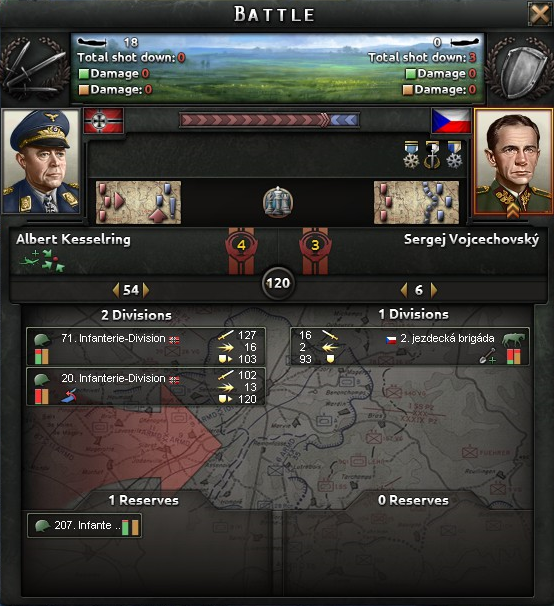
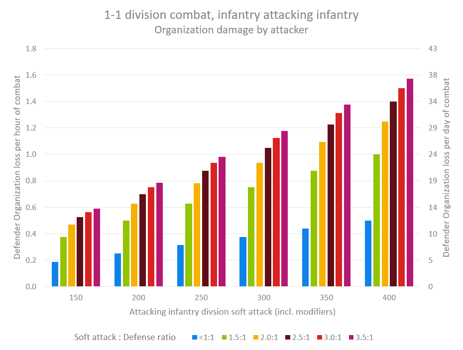
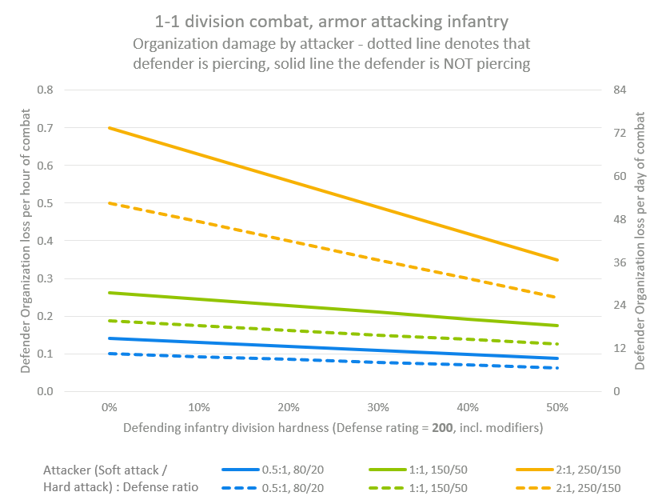

陆战
原页面：Land battle

陆上战斗是指进攻方师试图进入某省份时，在防守方 师 的 省份 中发起的战斗。它以一小时为一回合结算，各师对自动选定的敌方师造成伤害。当对方所有能继续作战的前线师耗尽时，另一方即获胜。如果进攻方获胜，防守方的部队将被迫撤退到另一个省份（若无处可退则溃散）。
Tactics
- 主条目：战斗战术
战术由领军将领自动选择。它们在战斗中提供伤害、移动速度和基础战斗宽度修正。
战斗宽度
战斗中双方的最大兵力集中度受其战斗宽度限制。如果进攻方从多个省份发起进攻（侧翼包夹），可用宽度会增加。空降会额外增加一个侧翼方向，海军登陆也是如此。基础宽度以及随后的侧翼宽度，取决于战斗发生地点的 地形。
一个师的战斗宽度是其所有营的宽度总和。大多数营的战斗宽度为 2，炮兵（包括摩托化和自行火炮）的战斗宽度为 3。反坦克营和防空营（包括摩托化）的战斗宽度为 1。支援连不占用战斗宽度。（另见 陆军单位#单位类型。）大规模突击学说树中互斥分支上的「大规模攻势」和「人海突击」科技会将普通步兵营的宽度减少 0.4，这意味着同样的步兵正面宽度内可以多容纳 25% 的步兵营。山地兵特种部队学说树中的「坚守阵线」科技会将山地兵营的宽度减少 0.2。
在战斗开始时或增援时（见下文），师会从预备队加入前线，除非战斗宽度已经填满，或战斗宽度惩罚会超过 -33%。[1] 战斗宽度惩罚的计算方式为 -100%[2] * (total_width - battle_width) / battle_width。
示例：
- 在一场 80 宽度的
 城市 战斗中，总宽度可以达到 106（惩罚 -32.5%），但达不到 107（惩罚 -33.75%）。
城市 战斗中，总宽度可以达到 106（惩罚 -32.5%），但达不到 107（惩罚 -33.75%）。 - 在一场 70 宽度的
 平原 战斗中，8 个宽度为 10 的师中最后一个将留在预备队，因为战斗宽度已经填满，尽管战斗宽度惩罚仅为约 -14.29%（来自 -100% * (80-70)/70）。
平原 战斗中，8 个宽度为 10 的师中最后一个将留在预备队，因为战斗宽度已经填满，尽管战斗宽度惩罚仅为约 -14.29%（来自 -100% * (80-70)/70）。
Reserves

最初装不下战斗宽度、或在战斗已经开始后才加入的师会进入预备队。在预备队中，这些单位既不承受也不造成伤害，不会恢复组织度，也不会增加其工事或准备加成。不过它们确实能提供侦察和防空能力。
只要有可用的战斗宽度，预备队中的一个单位每小时都有机会加入战斗。基础加入概率仅为每小时 2%[3]（因此平均加入时间约为 35 小时）。研究出无线电、师的速度、学说科技，以及为师配属通讯连，都能大幅提高这一概率。
作为防守方，要及时提供预备队，让它们有时间增援前线，而不至于被迫撤退甚至被歼灭。如果在满宽度下作战且拥有生力预备队，可以考虑把组织度极低的防守部队逐个手动撤退到离前线一个省份远的地方，让它们得以恢复、同时由预备队填补空缺。否则，你有可能面临所有前线部队同时组织度耗尽并撤退的局面，预备队将没有机会增援。
如果你是进攻方，可以考虑不要投入超过战斗宽度所能容纳的部队，这样其余的部队就不必在预备队中等待，而是可以恢复组织度并获得计划加成。当你确实拥有预备队且宽度有余（例如它们赶到了，或某个师组织度耗尽），而所有防守部队都已投入战斗时，与其等待增援，不如停止战斗并再次进攻，这样你的所有部队都能立即加入。
Attacks
当遇到具有特定硬度的目标时，造成伤害的师的 soft attack 和 hard attack 属性会结合起来，决定对该目标产生的攻击次数。目标的 hardness 越高，计入攻击次数的硬攻就越多，反之亦然。例如，硬度为 0% 的师会承受全部软攻、不受任何硬攻；而硬度为 25% 的师则承受 25% 的硬攻和 75% 的软攻。
Defenses
受伤害的目标拥有一定数量的防御来部分保护自己。对于防守方的师，这是 防御 属性；对于进攻方的师，则是 突破。
造成伤害


在伤害结算中，攻击次数为 取整(硬度修正后的攻击 / 10)，防御次数为 取整(防御 / 10)[4]。攻击和防御均每小时重置一次。
每次攻击都可能命中（造成 HP 和组织度伤害）或未命中（对 HP 和组织度没有影响）。每次攻击后，防守单位会消耗一点防御（如果还有剩余）。命中率取决于防守方是否还有防御剩余。如果有，命中率为 10%。[5] 若防御已耗尽，命中率则提高到 40%。[6]
对于每次命中，可能造成的伤害量由骰子随机决定。对于 HP 伤害，骰子大小为 2[7]；对于组织度伤害，骰子大小为 4[8]。每次命中对 HP 和组织度造成的确切伤害量，由掷出的点数乘以各项伤害修正得出（基础的 0.06 倍[9] 兵力修正和 0.053 倍[10] 组织度修正、战术攻击修正，以及装甲减免）。[11] 其他修正会影响攻击次数、进而影响命中次数，但不会影响每次命中per所产生的伤害量。
当装甲单位以穿透不足的单位为目标时，组织度骰子大小会提高到 6[12]，这体现了装甲单位在火力下更自由地机动、取得更好站位并因此造成更多伤害的能力。这意味着未被穿透的装甲单位平均每次命中造成 3.5 点组织度伤害，而不是 2.5 点，即提高了 +40%。
当单位在战斗中受到 HP 伤害时，其伤害输出会按比例缩减。缩放会四舍五入到 10% 的整数倍，例如兵力小于 100% 但不低于 90% 时，伤害输出按 90% 缩放。请注意，对单位 HP 造成的伤害在战斗结束前不会改变该单位的其他属性。
用一个例子来总结上述内容：一个拥有 1000 软攻的装甲师对战一个防御属性为 500 的步兵师。
- 50 次攻击在有防御的情况下有 10% 的命中率。
- 50 次攻击在没有防御的情况下有 40% 的命中率。
- 平均而言，该步兵师被命中 50 * 0.1 + 50 * 0.4 = 25 次。
- 每次组织度骰子点数的期望值为 3.5。
- 该装甲师受损至略低于 100% HP，因此具有 90% 的伤害缩放系数。
- 总计，该装甲师预计每小时造成 25 * 3.5 * 90% * 0.053 = 4.17375 点组织度伤害。对于组织度为 50-60 的普通步兵师，战斗预计约在半天内结束。
Targeting
各师并非均匀地攻击敌人。每个师都有一个「交战宽度」[13]，为其自身战斗宽度的两倍[14]，用于生成目标列表。敌方师按随机顺序加入列表，凡是会使目标列表超出交战宽度的都会被排除。如果没有任何敌方师能装下，则随机挑选一个。
例如，一个宽度为 36 的师，其交战宽度为 72。它的目标列表可以包含五个宽度为 14 的师（5*14 < 72）；但如果遇到五个宽度为 15 的师，它一次只能与其中四个交战（5*15 > 72）。当目标池中没有任何目标能装下选择目标一方的交战宽度时，将随机选择其中一个。如果有些目标装不下交战宽度、另一些能装下，则装不下的那些会被忽略，只会从能装下交战宽度的目标中选择。
攻击被分为未协调和已协调两部分。未协调的攻击按各自宽度分散到交战宽度内的所有目标上。被选中的一个优先目标还会额外承受全部已协调攻击，从而提高突破其防御的机会。
已协调比例为 35%[15] + 协调 × (1 + 主动性)。[16]
优先目标由[17]选定
- 考虑硬度如何影响进攻方对目标所拥有的 effective attacks 数量，并略微偏向硬攻[18]
- avoiding armored 目标：如果装甲超过进攻方的穿透，该评级减半
- 偏向 low organizaton：基于公式 100\%-org ratio/4
例如，一个宽度为 36、拥有 1000 次攻击的师，其目标列表上有五个宽度为 14、防御为 200 的师。此时没有其他影响协调的修正。650 次攻击将被分配给拆分攻击。每个敌方师将分得其中的 130 次。剩下被分出的 350 次将施加于被认为是首选目标的那个师。如果没有其他师可供分配攻击，这些攻击就会与防御相比较并结算为命中。4 个次级目标各承受 130 次攻击，对比其 200 点防御；而首要目标承受 480 次攻击，对比其 200 点防御。如果还有第二个攻击师具有完全相同的分配，那么次级目标将各承受 260 次命中，对比 200 点防御；首要目标则承受 960 次命中，对比 200 点防御。
附带损伤
州内的基础设施和省份内的工事会根据进攻方的攻击而受到损伤。损伤量随进攻方的攻击次数、软攻成分和伤害缩放系数而变化。对工事的损伤只有 5%[19] 的概率发生，而  基础设施 则一定会受损。近距空中支援的攻击不会造成附带损伤。
基础设施 则一定会受损。近距空中支援的攻击不会造成附带损伤。
：附带损伤 = 0.1 · 软攻 · \# 攻击次数 · 伤害结算系数 [20]
对基础设施的损伤会进一步缩放，详见 建造#损坏与修复。
「攻城炮兵」能力会使对陆地要塞的触发概率和伤害都翻倍。
战斗因素
以下因素会修正单位在战斗中的攻击次数和/或防御（列表并不完整）。所有因素以乘法叠加，因此根据战术态势的不同，有可能达到非常低或非常高的数值。
- 地形：进攻方在崎岖地形中会受到攻击和突破惩罚，最高可达 -50%（重型单位还会更高）
- 渡河：根据河流大小，进攻方的攻击和突破受到 -30% 或 -60% 的惩罚
- 夜间：双方的攻击都受到 -50%[21] 惩罚，可通过
 陆上夜袭 加成减轻
陆上夜袭 加成减轻 - 要塞：每级要塞使进攻方的攻击和突破受到 -15%[22] 的惩罚。每多一个进攻方向可抵消一级要塞，但不会抵消最后一级。
- 包围：若周围所有陆地省份均被敌方控制（岛屿除外），防守方受到 -30%[23] 惩罚
- 敌方制空权：面对敌方制空权的一方最多受到 -35%[24] 惩罚
- 补给不足：进攻方和防守方的攻击/防御惩罚最高分别可达 -25%[25]/-65%[26] 和 -35%[27]/-15%[28]
- 超出战斗宽度惩罚：每多出 1% 战斗宽度 -1%[2]，最高 -33%[1]
- 战斗中师数量过多造成的堆叠惩罚：超过堆叠上限的每个师 -2%[29]。堆叠上限为 5[30]，每个侧翼方向另加 3[31]。
- 在多重战斗中：对于同时处于多重战斗的师（例如一边进攻一边被进攻），-50%[32]
- 空降惩罚：空降后受到 -30%[33] 战斗惩罚，持续 48[34] 小时
- 两栖惩罚：-50%[35]
- 指挥官技能：每点技能为攻击和防御提供 +2.5%
- 计划加成：进攻方最高 +30%[36]，还可通过学说进一步提升至 +110% 或更高
- 工事：防守方每积累一点获得 +2%
- 空中支援：攻击和防御加成（在支援飞机的直接伤害之外额外提供）
- 国家加成
- 师经验：-25% 对应
 绿色，+0% 对应
绿色，+0% 对应  训练有素，+25% 对应
训练有素，+25% 对应  正规，+50% 对应
正规，+50% 对应  老练，+75% 对应
老练，+75% 对应  精锐[37]
精锐[37] - 情报优势：来自陆军情报优势，最高 +15%[38]（从 5[39] 情报优势开始，在 50[40] 情报优势时达到上限）
- 战术：例如来自突破的 +20%。
例如：
- 经验 +75%
- 工事 +40%
- +20% 地形
- +40% 国家
- 指挥官技能 +35%
导致基础属性获得 +456% 的修正（1.75*1.4*1.2*1.4*1.35=5.56）
如果相乘后的数值更低，最终系数将以 1% 为下限。
装备损伤
战斗结束后，损失的 HP 比例会以 70% 的系数换算为装备和人力损失。[41] 若师编制未变，单位的属性在战斗期间会被锁定，仅在战斗结束后才更新。
装备缴获
如果战斗的获胜方拥有装备缴获率（ECR）属性，就能缴获敌方损失装备的一部分。该属性的默认值为 0%,[42]，但可以通过使用  维修连、
维修连、 Scavenger 将领特质以及各种 国家精神 获得。每个师按其人力乘以 ECR 所占的比例分得敌方损失的一部分，并按自身 ECR 回收装备。例如，若战斗获胜方有一个师拥有 10000 人力 和 5% ECR，另一个师拥有 20000
Scavenger 将领特质以及各种 国家精神 获得。每个师按其人力乘以 ECR 所占的比例分得敌方损失的一部分，并按自身 ECR 回收装备。例如，若战斗获胜方有一个师拥有 10000 人力 和 5% ECR，另一个师拥有 20000  人力 和 10% ECR，则前者将回收敌方损失装备的 20% * 5% = 1%，而后者将回收 80% * 10% = 8%（因人力乘以 ECR 为 4 倍，故为 80% 对 20%）。
人力 和 10% ECR，则前者将回收敌方损失装备的 20% * 5% = 1%，而后者将回收 80% * 10% = 8%（因人力乘以 ECR 为 4 倍，故为 80% 对 20%）。
装备回收
获胜方会根据可靠性回收自身装备的一部分。每个师回收其损失装备的 : recovery ratio = reliability^2 · 40\% [43]，其中包括被击落的空中支援飞机。若有足够多的师，总回收率可以超过 100%。[44] 例如，15 个师使用可靠性 90% 的步兵装备成功进攻，总共将回收其损失装备的 : (90\%)^2 · 40\% · 15 = 486\%。
参考资料
- ↑ 1.0 1.1
NDefines.NMilitary.COMBAT_OVER_WIDTH_PENALTY_MAX = -0.33中的 定义文件。 - ↑ 2.0 2.1
NDefines.NMilitary.COMBAT_OVER_WIDTH_PENALTY = -1中的 定义文件。 - ↑
NDefines.NMilitary.REINFORCE_CHANCE = 0.02中的 定义文件。 - ↑ 取整(x) 是随机的，定义如下
取整(x) = ⌊x⌋ + Bernoulli(x - ⌊x⌋) - ↑
NDefines.NMilitary.BASE_CHANCE_TO_AVOID_HIT = 90中的 定义文件。 - ↑
NDefines.NMilitary.CHANCE_TO_AVOID_HIT_AT_NO_DEF = 60中的 定义文件。 - ↑
NDefines.NMilitary.LAND_COMBAT_STR_DICE_SIZE = 2中的 定义文件。 - ↑
NDefines.NMilitary.LAND_COMBAT_ORG_DICE_SIZE = 4中的 定义文件。 - ↑
NDefines.NMilitary.LAND_COMBAT_STR_DAMAGE_MODIFIER = 0.06中的 定义文件。 - ↑
NDefines.NMilitary.LAND_COMBAT_ORG_DAMAGE_MODIFIER = 0.053中的 定义文件。 - ↑
NDefines.NMilitary.PIERCING_THRESHOLDS = { 1, 0.75, 0.5, 0 }和NDefines.NMilitary.PIERCING_THRESHOLD_DAMAGE_VALUES = { 1, 0.8, 0.65, 0.5 }，见定义文件。 - ↑
NDefines.NMilitary.LAND_COMBAT_ORG_ARMOR_ON_SOFT_DICE_SIZE = 6中的 定义文件。 - ↑ HOI4 副开发者日志 —— 战斗目标选择迭代
- ↑
NDefines.NMilitary.ENGAGEMENT_WIDTH_PER_WIDTH = 2 - ↑
NDefines.NMilitary.DAMAGE_SPLIT_ON_FIRST_TARGET = 0.35中的 定义文件。 - ↑ 协调份额上限为 90%
- ↑ 综合起来，需要最大化的得分为 : (soft attack * (1 - hardness) * 1 + hard attack * hardness * 1.2) * (0.5 if armor is not pierced) * (100 \% - org ratio/4)
- ↑
NDefines.NMilitary.SOFT_ATTACK_TARGETING_FACTOR = 1和NDefines.NMilitary.HARD_ATTACK_TARGETING_FACTOR = 1.2，见定义文件。 - ↑
NDefines.NMilitary.LAND_COMBAT_FORT_DAMAGE_CHANCE = 5中的 定义文件。 - ↑ 论坛：1305734
- ↑
NDefines.NMilitary.BASE_NIGHT_ATTACK_PENALTY = -0.5中的 定义文件。 - ↑
NDefines.NMilitary.BASE_FORT_PENALTY = -0.15中的 定义文件。 - ↑
NDefines.NMilitary.ENCIRCLED_PENALTY = -0.3中的 定义文件。 - ↑
NDefines.NMilitary.ENEMY_AIR_SUPERIORITY_IMPACT = -0.35中的 定义文件。 - ↑
NDefines.NMilitary.COMBAT_SUPPLY_LACK_ATTACKER_ATTACK = -0.25中的 定义文件。 - ↑
NDefines.NMilitary.COMBAT_SUPPLY_LACK_ATTACKER_DEFEND = -0.65中的 定义文件。 - ↑
NDefines.NMilitary.COMBAT_SUPPLY_LACK_DEFENDER_ATTACK = -0.35中的 定义文件。 - ↑
NDefines.NMilitary.COMBAT_SUPPLY_LACK_DEFENDER_DEFEND = -0.15中的 定义文件。 - ↑
NDefines.NMilitary.COMBAT_STACKING_PENALTY = -0.02中的 定义文件。 - ↑
NDefines.NMilitary.COMBAT_STACKING_START = 5中的 定义文件。 - ↑
NDefines.NMilitary.COMBAT_STACKING_EXTRA = 3中的 定义文件。 - ↑
NDefines.NMilitary.MULTIPLE_COMBATS_PENALTY = -0.5中的 定义文件。 - ↑
NDefines.NMilitary.PARADROP_PENALTY = -0.3中的 定义文件。 - ↑
NDefines.NMilitary.PARADROP_HOURS = 48中的 定义文件。 - ↑
NDefines.NNavy.AMPHIBIOUS_LANDING_PENALTY = -0.5中的 定义文件。 - ↑
NDefines.NMilitary.PLANNING_MAX = 0.3中的 定义文件。 - ↑
NDefines.NMilitary.EXPERIENCE_COMBAT_FACTOR = 0.25中的 定义文件。 - ↑
NDefines.NIntel.ARMY_INTEL_COMBAT_BONUS_MAX_BONUS = 0.15中的 定义文件。 - ↑
NDefines.NIntel.ARMY_INTEL_COMBAT_BONUS_MIN_INTEL_FOR_BONUS = 5中的 定义文件。 - ↑
NDefines.NIntel.ARMY_INTEL_COMBAT_BONUS_MAX_INTEL_FOR_BONUS = 50中的 定义文件。 - ↑
NDefines.NMilitary.EQUIPMENT_COMBAT_LOSS_FACTOR = 0.7中的 定义文件。 - ↑
NDefines.NMilitary.BASE_CAPTURE_EQUIPMENT_RATIO = 0中的 定义文件。 - ↑
NDefines.NMilitary.RELIABILTY_RECOVERY = 0.4中的 定义文件。 - ↑ bug report